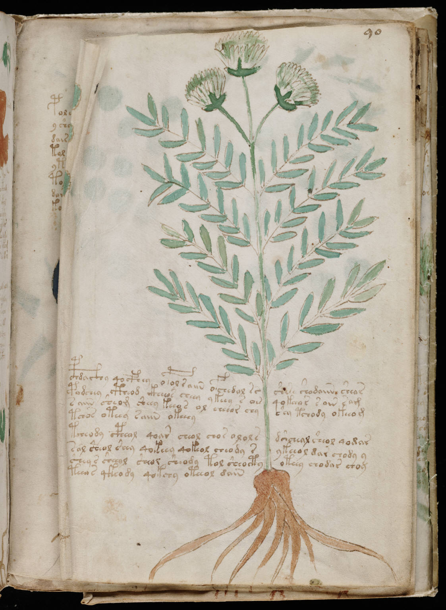

f90v2
1cphdaithy qocfhey opol raiin ofchedol rsshese shodaiin sheos2podchey ctheod ikheeos cheey ykeey s oesqokoor s oin sam3saiin sheom sheey keeos ol cheeor chyshy tchody okeeom4tchos oteey saiin okeeey5tcheody cpheol qoar cheol chos ololsdshcheal sheol qodar6sal sheol shey qokeey qokeol cheody sykeeol dar chody y7shey s sheeyl sheol sheody tol sheoctyoteey chodar choy8teeos qkeody qokchy oteeol dain
